1. ಮುಖ್ಯ ದ್ವಾರದಲ್ಲಿ ದೊಡ್ಡ ಹಿತ್ತಾಳೆ ಸಮೈ ದೀಪಗಳು
ಲಿವಿಂಗ್ ರೂಮ್ ಪ್ರವೇಶದ್ವಾರದ ಎರಡೂ ಬದಿಗಳಲ್ಲಿ ಎತ್ತರದ ಹಿತ್ತಾಳೆ ಸಮೈ ದೀಪಗಳನ್ನಿಟ್ಟು ಹಸುವಿನ ತುಪ್ಪ ಅಥವಾ ಎಳ್ಳೆಣ್ಣೆಯಿಂದ ಬೆಳಗಿಸಿ.
ಸಾಂಪ್ರದಾಯಿಕ ಹಿತ್ತಾಳೆ ಹರಿವಾಣಗಳು, ಬೆಚ್ಚನೆಯ ದೀಪಗಳ ಸರಮಾಲೆ, ರೇಷ್ಮೆ ಕುಶನ್ಗಳು ಮತ್ತು ಸುಗಂಧಭರಿತ ಹೂವುಗಳಿಂದ ನಿಮ್ಮ ಮನೆಯನ್ನು ಅರಮನೆಯಂತೆ ಶೃಂಗರಿಸಿ.

ತ್ವರಿತ ಉತ್ತರ (ಪ್ರಜಾವಾಣಿ/ವಿಜಯವಾಣಿ ಶೈಲಿ ವಿಶ್ಲೇಷಣೆ): ದೀಪಾವಳಿ ಹಾಲ್ ಅಲಂಕಾರಕ್ಕೆ ಅತ್ಯಂತ ಪರಿಣಾಮಕಾರಿ ವಿಧಾನವೆಂದರೆ "ಲೇಯರ್ಡ್ ಸ್ಟೈಲಿಂಗ್" (ಅಂಚೆಲಂಚೆಯ ವಿನ್ಯಾಸ). ಟೀಪಾಯ್ ಮೇಲೆ ನೀರು, ತಾಜಾ ಚೆಂಡುಹೂವಿನ ದಳಗಳು ಮತ್ತು ತೇಲುವ ದೀಪಗಳನ್ನಿಟ್ಟ ಹಿತ್ತಾಳೆಯ ಹರಿವಾಣ ಅಥವಾ ಗಂಗಾಳ (Brass Vessel), ಕಿಟಕಿ ಪರದೆಗಳ ಹಿಂದೆ 2700K ಗೋಲ್ಡನ್ ದೀಪಗಳ ಸರಮಾಲೆ, ಸೋಫಾದ ಮೇಲೆ ಎಮರಾಲ್ಡ್ ಗ್ರೀನ್ ಮತ್ತು ಕೆಂಪು ರೇಷ್ಮೆ ಕುಶನ್ಗಳು (ದಿಂಬುಗಳು), ಹಾಗೂ ಮುಖ್ಯದ್ವಾರದಲ್ಲಿ ಮಾವಿನೆಲೆ ತೋರಣ ಮತ್ತು ಮಣ್ಣಿನ ಹಣತೆಗಳನ್ನು ಸಂಯೋಜಿಸುವುದರಿಂದ ಕಡಿಮೆ ಖರ್ಚಿನಲ್ಲಿ ರಾಜಮನೆತನದ ವೈಭವ ಸಿಗುತ್ತದೆ.
ಸಾಂಪ್ರದಾಯಿಕ ಹಿತ್ತಾಳೆ ದೀಪಗಳು, ಸಮೈ ಕಂಬಗಳು ಮತ್ತು ಮೊರಾಕನ್ ಕಟೌಟ್ ಲ್ಯಾಂಟರ್ನ್ಗಳಿಂದ ನಿಮ್ಮ ಹಾಲ್ಗೆ ಅರಮನೆಯ ರಂಗು ನೀಡಿ.
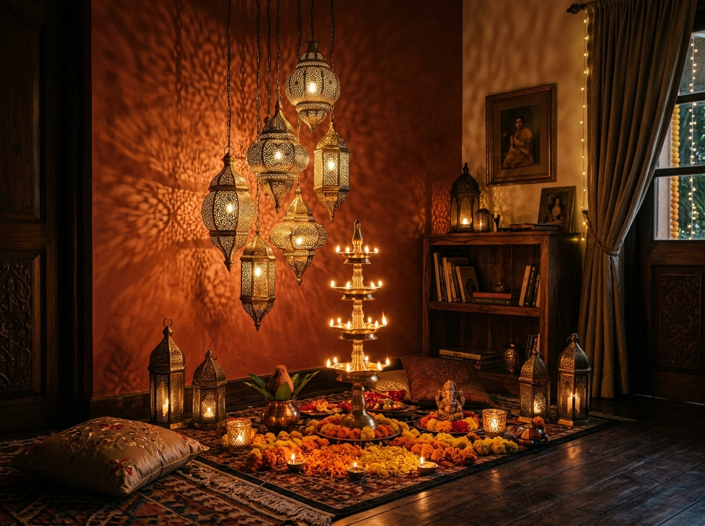
📌 Save Look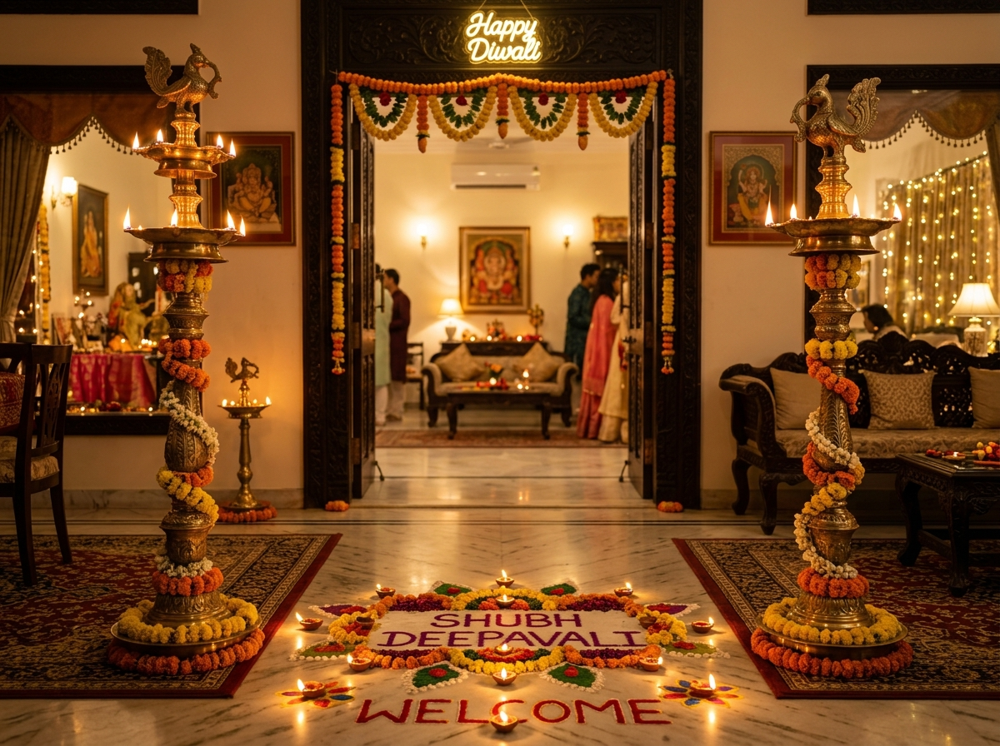
📌 Pin Lookಲಿವಿಂಗ್ ರೂಮ್ ಪ್ರವೇಶದ್ವಾರದ ಎರಡೂ ಬದಿಗಳಲ್ಲಿ ಎತ್ತರದ ಹಿತ್ತಾಳೆ ಸಮೈ ದೀಪಗಳನ್ನಿಟ್ಟು ಹಸುವಿನ ತುಪ್ಪ ಅಥವಾ ಎಳ್ಳೆಣ್ಣೆಯಿಂದ ಬೆಳಗಿಸಿ.
ಕೋಣೆಯ ಮೂಲೆಗಳಲ್ಲಿ ಸೂಕ್ಷ್ಮ ಕೆತ್ತನೆಯ ಹಿತ್ತಾಳೆ ಲ್ಯಾಂಟರ್ನ್ಗಳನ್ನು ತೂಗುಹಾಕಿ. ಇವುಗಳ ಬೆಳಕು ಗೋಡೆಯ ಮೇಲೆ ನಕ್ಷತ್ರಗಳ ನೆರಳು ಮೂಡಿಸುತ್ತದೆ.
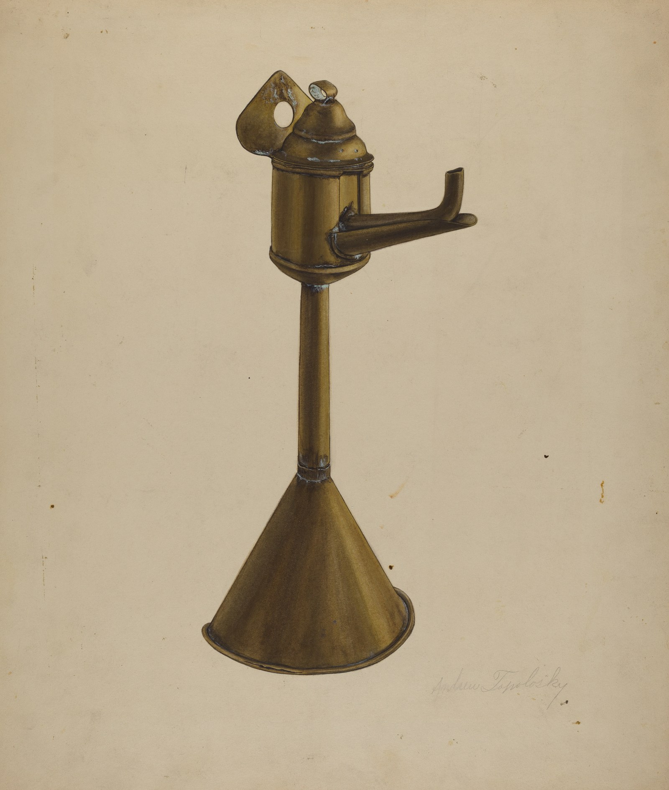
📌 Pin Lookಸೈಡ್ ಟೇಬಲ್ ಮೇಲೆ ಸಣ್ಣ ಹಿತ್ತಾಳೆಯ ಆನೆಗಳು, ಗಂಟೆಗಳು ಮತ್ತು ನಂದಾದೀಪಗಳನ್ನು ಜೋಡಿಸಿ.
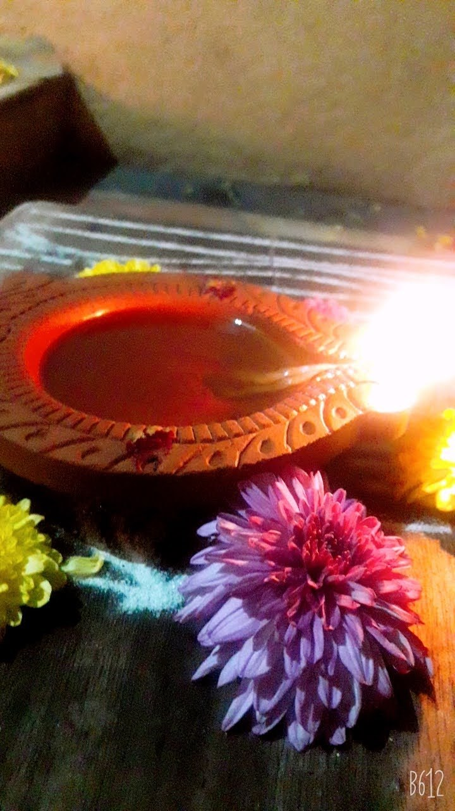
📌 Pin Lookಪೂಜಾ ಸ್ಥಳದ ಬಳಿ ಅಥವಾ ಈಶಾನ್ಯ ಮೂಲೆಯಲ್ಲಿ ಗಾಜಿನ ಕವಚವಿರುವ ಅಖಂಡ ಜ್ಯೋತಿಯನ್ನಿಡಿ.
ಹಿತ್ತಾಳೆ ಧೂಪದಾನಿಯಲ್ಲಿ ದಶಾಂಘ ಅಥವಾ ಸಾಂಬ್ರಾಣಿ ಹಾಕಿ ಇಡೀ ಮನೆಯಲ್ಲಿ ಪಾವಿತ್ರ್ಯತೆ ಹರಡಿ.
ಸರಿಯಾದ ಬೆಳಕಿನಿಂದ ಸಾಮಾನ್ಯ ಕೋಣೆಯೂ ಸಿನಿಮಾ ಸೆಟ್ನಂತೆ ಮಾಂತ್ರಿಕವಾಗಿ ಕಾಣುತ್ತದೆ.
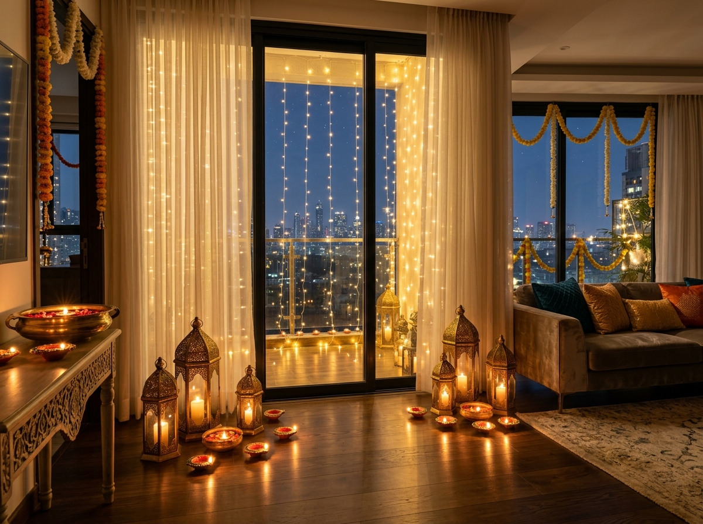
📌 Save Lookತೆಳುವಾದ ಬಿಳಿ ಪರದೆಗಳ ಹಿಂದೆ 2700K ವಾರ್ಮ್ ವೈಟ್ ಲೈಟ್ಗಳನ್ನು ತೂಗುಹಾಕಿ ಕೋಣೆಗೆ ಚಿನ್ನದ ಕಾಂತಿ ನೀಡಿ.
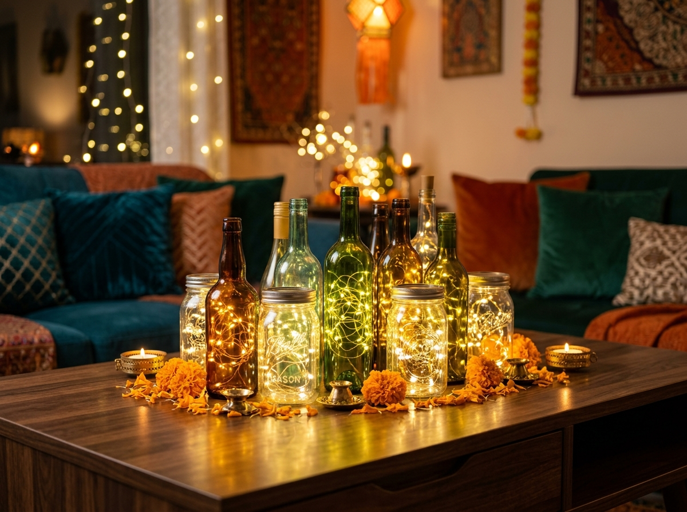
📌 Pin Lookಹಳೆಯ ಗಾಜಿನ ಬಾಟಲಿಗಳಲ್ಲಿ ತಂತಿಯ ಎಲ್ಇಡಿ ಲೈಟ್ಗಳನ್ನು ತುಂಬಿಸಿ ಟೀಪಾಯ್ ಅಥವಾ ಕಪಾಟಿನಲ್ಲಿಡಿ.
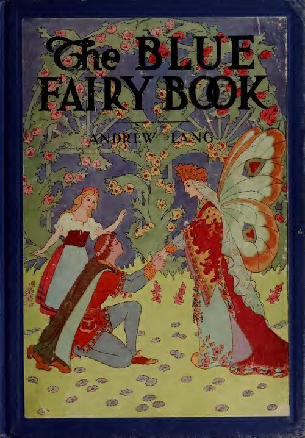
📌 Pin Lookಹಾಲಿನಲ್ಲಿರುವ ಪಾಮ್ ಅಥವಾ ಮನಿ ಪ್ಲಾಂಟ್ ಕುಂಡಗಳಿಗೆ ತಾಮ್ರದ ತಂತಿ ಲೈಟ್ಗಳನ್ನು ಸುತ್ತಿ.
ಟಿವಿ ಯೂನಿಟ್ ಅಥವಾ ಗೋಡೆಯ ಶಲ್ಫ್ಗಳ ಕೆಳಭಾಗದಲ್ಲಿ ವಾರ್ಮ್ ಎಲ್ಇಡಿ ಪಟ್ಟಿಗಳನ್ನು ಅಂಟಿಸಿ.
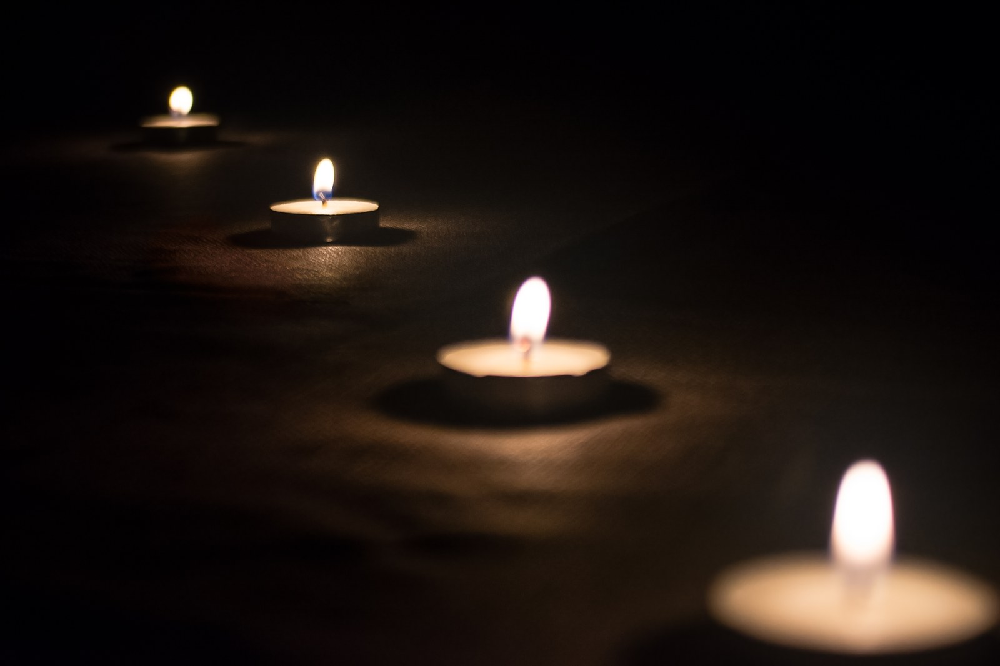
📌 Pin Lookಮಕ್ಕಳು ಮತ್ತು ಮುದ್ದಿನ ಪ್ರಾಣಿಗಳಿರುವ ಮನೆಗಳಲ್ಲಿ ಬೆಂಕಿಯ ಅಪಾಯವಿಲ್ಲದ ಎಲೆಕ್ಟ್ರಾನಿಕ್ ದೀಪಗಳನ್ನು ಬಳಸಿ.
ತಾಜಾ ಹೂವುಗಳು ಮತ್ತು ನೀರಿನಲ್ಲಿ ತೇಲುವ ದೀಪಗಳು ಮನೆಗೆ ಶಾಂತಿ ಹಾಗೂ ಸಮೃದ್ಧಿಯನ್ನು ತರುತ್ತವೆ.
ಮಧ್ಯದ ಟೇಬಲ್ ಮೇಲೆ ನೀರಿನಿಂದ ತುಂಬಿದ ಹಿತ್ತಾಳೆಯ ಹರಿವಾಣ ಅಥವಾ ಗಂಗಾಳದಲ್ಲಿ ಚೆಂಡುಹೂ, ಗುಲಾಬಿ ದಳಗಳು ಮತ್ತು 5 ತೇಲುವ ಹಣತೆಗಳನ್ನಿಡಿ.
ಮುಖ್ಯ ಬಾಗಿಲಿಗೆ ಹಸಿರು ಮಾವಿನೆಲೆ ಮತ್ತು ಹಳದಿ ಚೆಂಡುಹೂವಿನ ಸಾಂಪ್ರದಾಯಿಕ ತೋರಣವನ್ನು ಕಟ್ಟಿ.
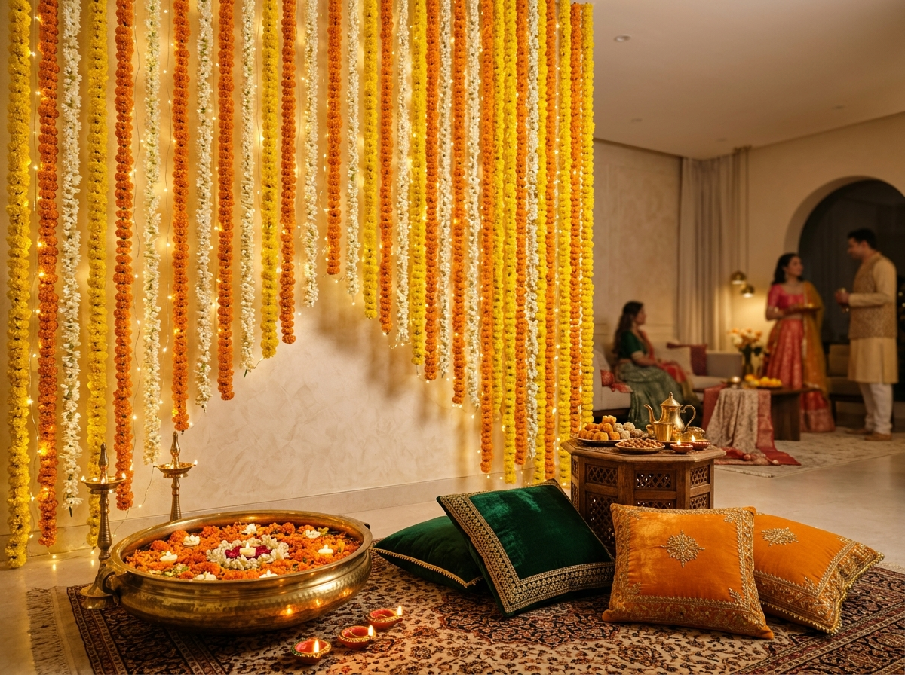
📌 Pin Lookಕಿಟಕಿ ಅಥವಾ ಖಾಲಿ ಗೋಡೆಗೆ ಮಲ್ಲಿಗೆ ಮತ್ತು ಚೆಂಡುಹೂವಿನ ನೇರ ಸರಗಳನ್ನು ತೂಗುಹಾಕಿ ಫೋಟೋ ಕಾರ್ನರ್ ಮಾಡಿ.
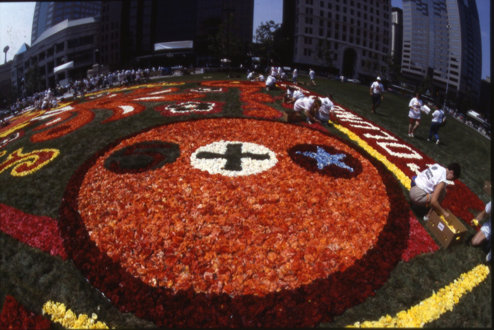
📌 Pin Lookಸೋಫಾ ರಗ್ಗು ಅಥವಾ ದೇವರ ಕೋಣೆಯ ಮುಂದೆ ವಿವಿಧ ಬಣ್ಣದ ಹೂವಿನ ದಳಗಳಿಂದ ಅಂದವಾದ ಬಾರ್ಡರ್ ರಚಿಸಿ.
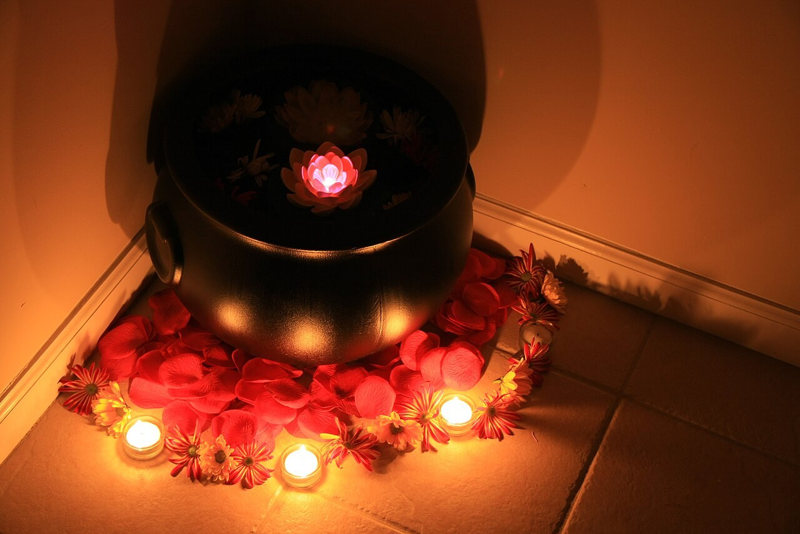
📌 Pin Lookಹರಿವಾಣದ ನೀರಿಗೆ 4 ಹನಿ ಮಲ್ಲಿಗೆ ಅಥವಾ ಶ್ರೀಗಂಧದ ಎಣ್ಣೆ ಹಾಕಿ ನೈಸರ್ಗಿಕ ಸುಗಂಧ ಪಡೆಯಿರಿ.
ಹೊಸ ಪೀಠೋಪಕರಣ ಕೊಳ್ಳದೆ ಬರೀ ಕುಶನ್ ಕವರ್ ಮತ್ತು ರನ್ನರ್ಗಳಿಂದ ಕೋಣೆಯ ಅಂದ ಹೆಚ್ಚಿಸಿ.
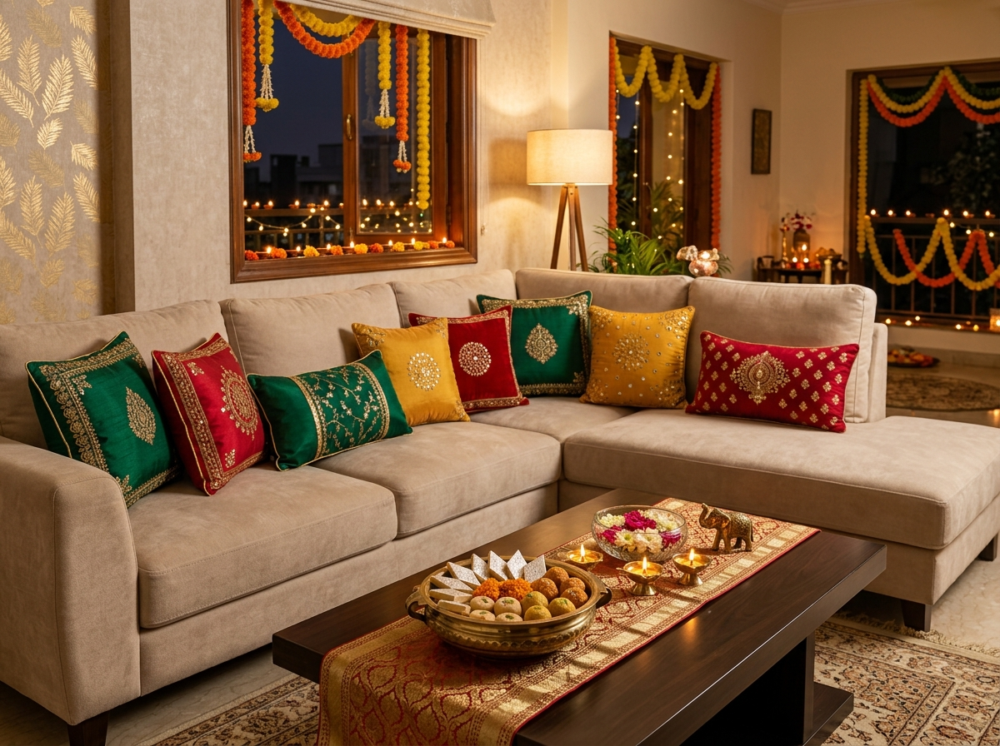
📌 Save Lookಹಸಿರು, ಕೆಂಪು ಮತ್ತು ಹಳದಿ ಬಣ್ಣದ ರೇಷ್ಮೆ ಕುಶನ್ಗಳನ್ನು ಸೋಫಾದ ಮೇಲೆ 2:2:1 ಸೂತ್ರದಲ್ಲಿ ಜೋಡಿಸಿ.
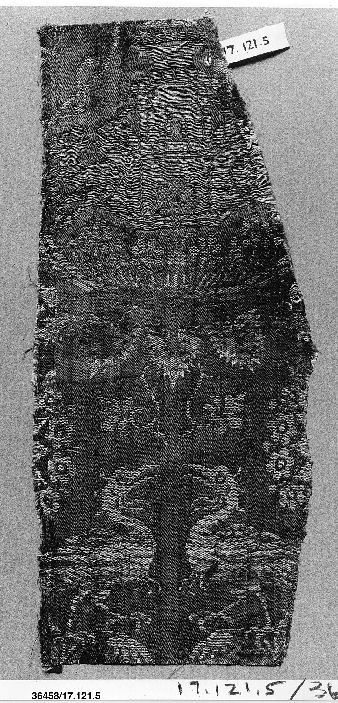
📌 Pin Lookಮಧ್ಯದ ಟೇಬಲ್ ಮೇಲೆ ಮೆರೂನ್ ಅಥವಾ ನೇವಿ ಬ್ಲೂ ಜರಿ ರನ್ನರ್ ಅನ್ನು ಹರಡಿ.
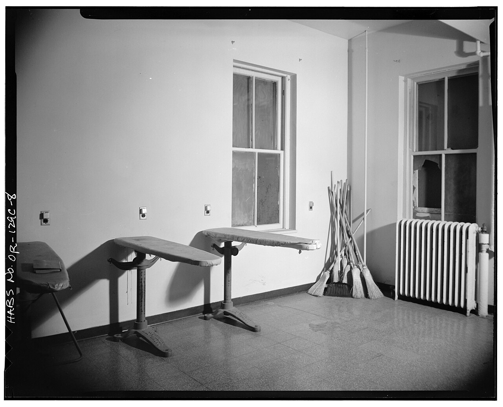
📌 Pin Lookಅತಿಥಿಗಳು ಆರಾಮವಾಗಿ ಕುಳಿತುಕೊಳ್ಳಲು ನೆಲದ ಮೇಲೆ ದಪ್ಪನೆಯ ಜಮಖಾನೆ ಮತ್ತು ವೆಲ್ವೆಟ್ ದಿಂಬುಗಳನ್ನಿಡಿ.
ಸೋಫಾದ ತುದಿಯಲ್ಲಿ ಹಗುರವಾದ ಚಿನ್ನದ ಬಣ್ಣದ ಥ್ರೋ ಬಟ್ಟೆಯನ್ನು ಸ್ಟೈಲಿಶ್ ಆಗಿ ಹಾಕಿ.
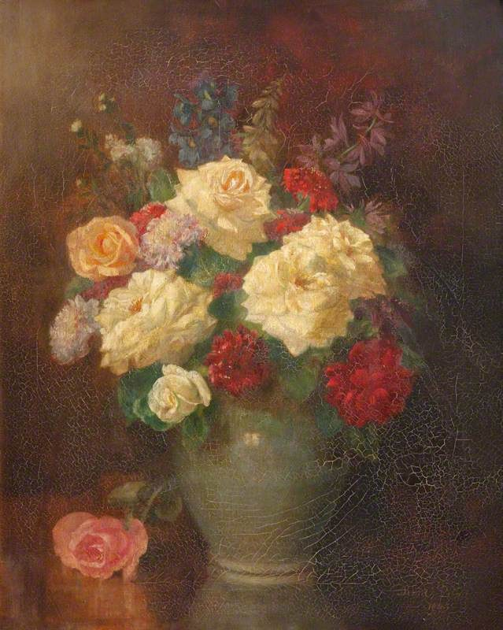
📌 Pin Lookಬಿಳಿ ಪಿಂಗಾಣಿ ಪಾತ್ರೆಗಳಲ್ಲಿ ಒಣಗಿದ ಹುಲ್ಲು ಮತ್ತು ಸಣ್ಣ ದೀಪಗಳನ್ನಿಟ್ಟು ಮಾಡರ್ನ್ ಲುಕ್ ತನ್ನಿ.
ರಾಸಾಯನಿಕ ಮುಕ್ತ, ಪರಿಸರಸ್ನೇಹಿ ಮತ್ತು ಕುಟುಂಬದೊಂದಿಗೆ ಆನಂದಿಸುವ ಕಲಾತ್ಮಕ ಅಲಂಕಾರಗಳು.
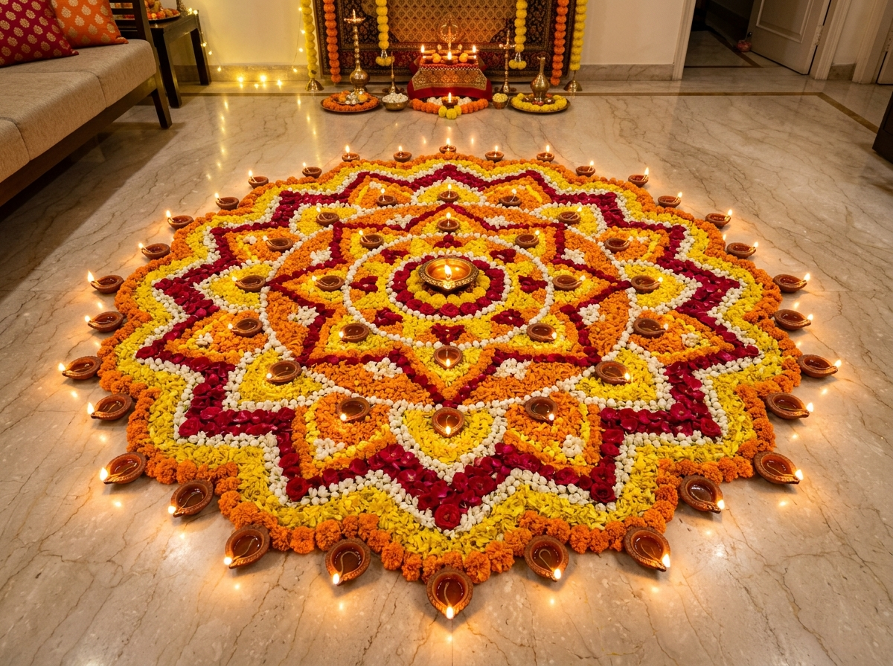
📌 Save Lookರಾಸಾಯನಿಕ ಬಣ್ಣಗಳ ಬದಲು ಹೂವಿನ ದಳಗಳು, ಅಕ್ಕಿ ಹಿಟ್ಟು ಮತ್ತು ಅರಿಶಿನದಿಂದ ರಂಗೋಲಿ ಹಾಕಿ.
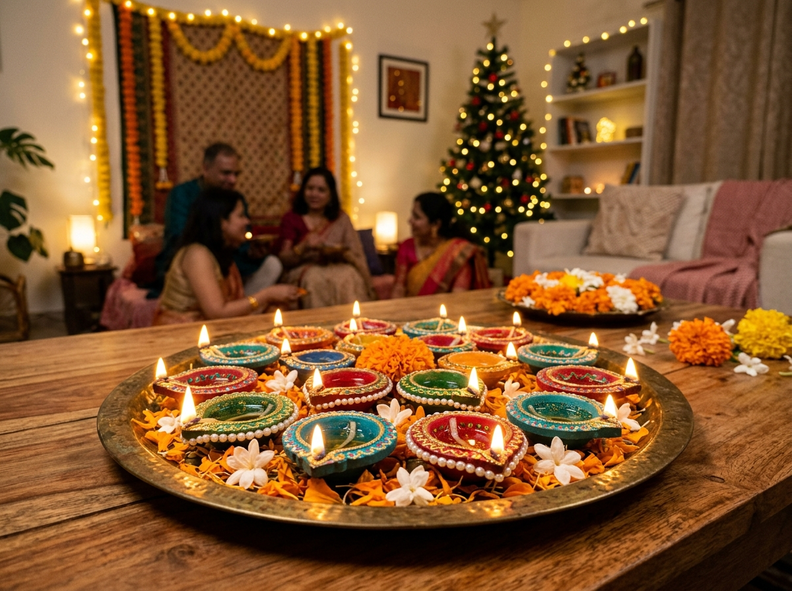
📌 Pin Lookಕುಂಬಾರರಿಂದ ತಂದ ಮಣ್ಣಿನ ಹಣತೆಗಳಿಗೆ ಅಕ್ರಿಲಿಕ್ ಬಣ್ಣ ಹಚ್ಚಿ ನೀವೇ ಸ್ವತಃ ವಿನ್ಯಾಸಗೊಳಿಸಿ.
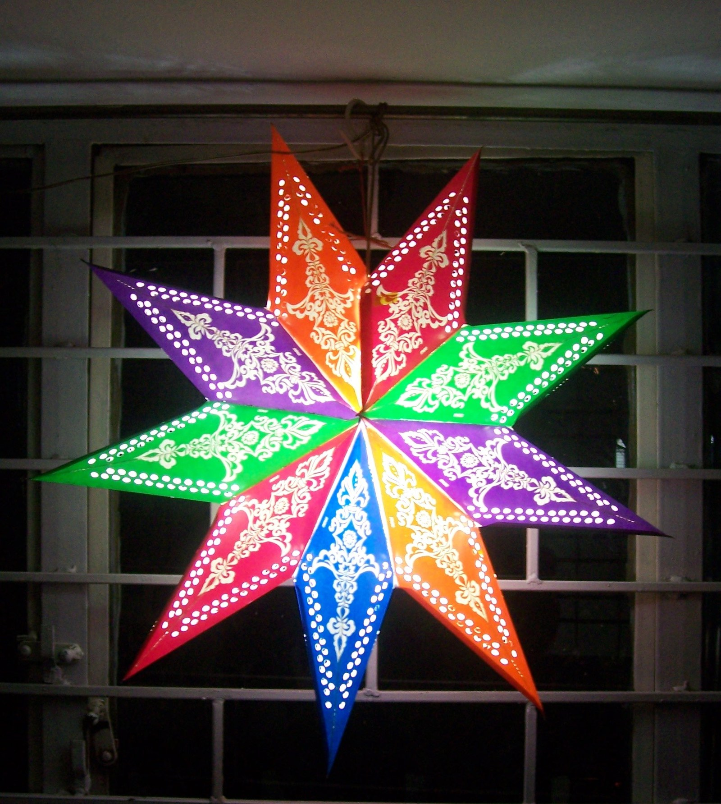
📌 Pin Lookಮಕ್ಕಳೊಂದಿಗೆ ವರ್ಣರಂಜಿತ ಕಾಗದಗಳಿಂದ ಸಾಂಪ್ರದಾಯಿಕ ಗೂಡುದೀಪ (ಆಕಾಶಬುಟ್ಟಿ) ಮಾಡಿ ನೇತುಹಾಕಿ.
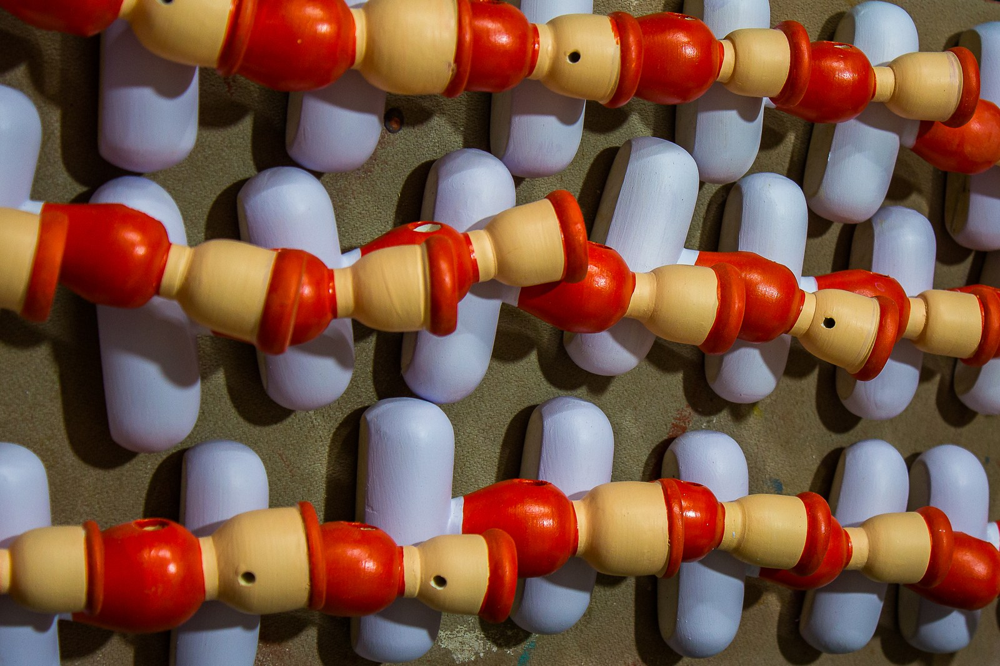
📌 Pin Lookಹಾಲ್ನ ಒಂದು ಮೂಲೆಯಲ್ಲಿ ಸಾಂಪ್ರದಾಯಿಕ ಚನ್ನಪಟ್ಟಣ ಬೊಂಬೆಗಳ ಜೋಡಣೆ ಮಾಡಿ.
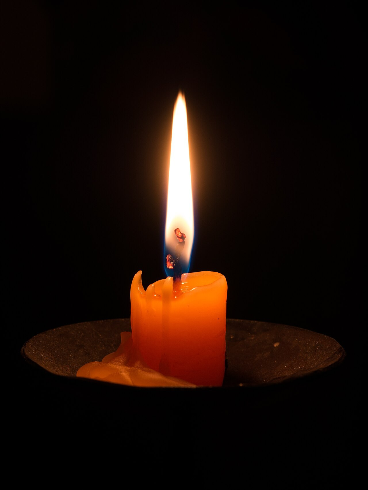
📌 Pin Lookಪ್ಯಾರಾಫಿನ್ ಬದಲು ಹೊಗೆ ರಹಿತ ಸೋಯಾ ಮೇಣದ ದೀಪಗಳನ್ನು ಆಯ್ಕೆಮಾಡಿ.
Selected for durability, 100% pure materials (brass/silk), and positive customer feedback.
Heavy antique gold finish, solid cast brass, ideal for floating candles & flower petals.
USB & plug operated, 8 lighting modes, copper wire, heat-resistant & child-safe.
Our styling editorial board spent 48 hours testing decor items across urban 2BHK/3BHK apartments and independent villas: